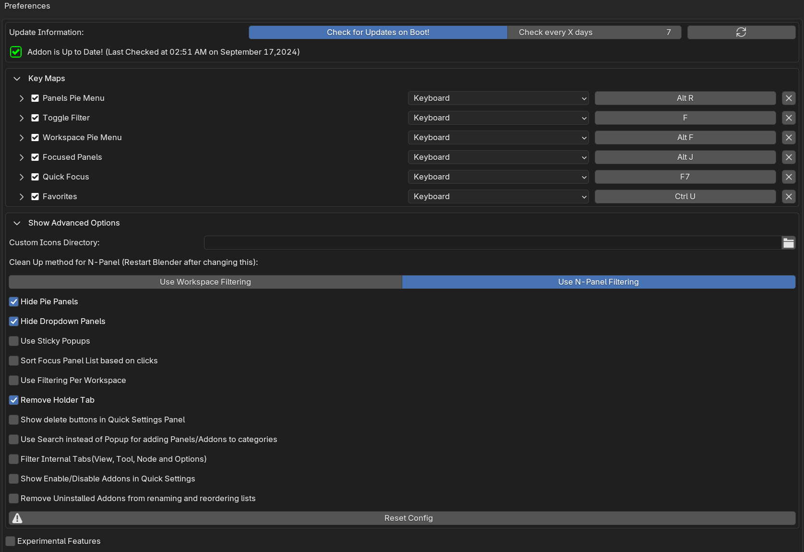
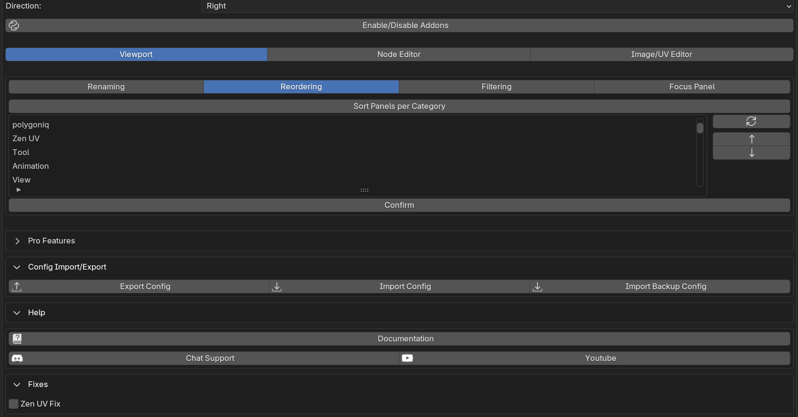
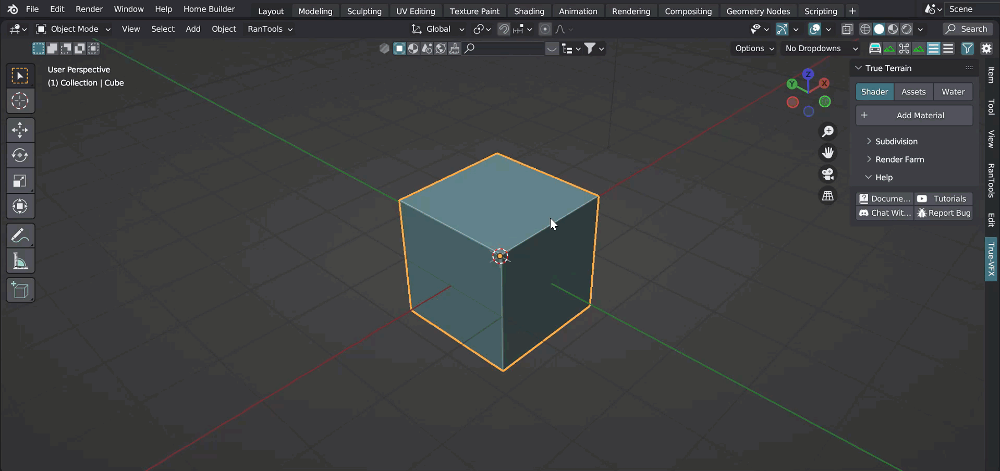
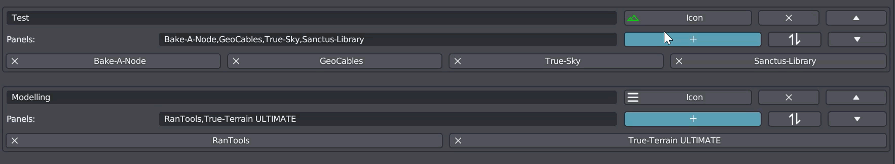
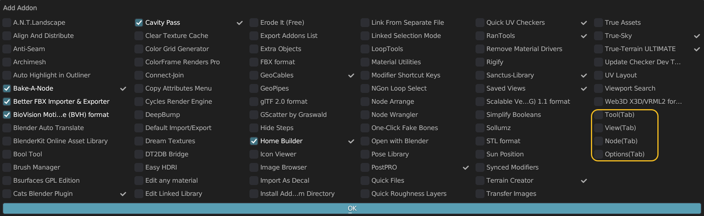
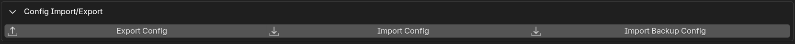

Preferences
This section provides an overview of the options available in the addon preferences.  
Clean Up method for N-Panel:
Blender’s has an inbuilt way to enable/disable addons for the current workspace using Workspace ‘Filter addons’ but for CP it is an outdated method, and we don’t recommend using it. Most newer features, like Focus Panels, do not work with this method. Therefore, it is advised to use the N-Panel Filtering method.
Warning
This method will be removed in the next version.
Hide Pie Panels/DropDowns
Toggle these off if you don’t want to use Pie Panels or DropDowns in your workflow.
Sort Focus Panel list based on clicks
By default, the Focus Panel list is sorted alphabetically, or if you are using Focus Panel Categories, they will be sorted by the order given in those categories. Enable this option if you want your Focus Panel list to be sorted based on the panels you use most often.
Use Filtering Per Workspace
Enable this option if you want different sets of filter categories enabled across different workspaces. For example, you could have your material categories enabled in the shading workspace and your modeling categories enabled in the modeling workspace.

Remove Holder Tab
You don’t need to disable this. If you disable it, all your filtered-out panels will be stored in a ‘DUMP’ tab available in the N-Panel. Keeping it enabled ensures you won’t have to worry about it.
Use Search instead of Popup for adding Panels/Addons to categories
If you have many addons and the checkbox popup can’t fit them, you can either enlarge your preferences window or revert to the old style of adding Panels/Addons to categories, which is a search popup.

Filter Internal Tabs
Blender has some internal tabs that aren’t part of any addons. It was not possible to filter them before V5.0, but now it is. It’s off by default, but if you want to filter them out, you can enable this. When adding addons to your N-Panel filtering Categories, you will see them listed with ‘(Tab)’ in their name.

Experimental Features
This section is planned to be removed in the future, as it is related to the workspace clean-up method.
Use Sticky Popups
Enable this if you want your dropdowns and pie panels to stay open until you click outside of them.
Note
It’s currently not possible to keep them open after clicking outside, due to a Blender limitation. If Blender fixes this in the future, we will update it accordingly.
Enable/Disable Addons
This popup allows you to view all your addons and enable/disable them from one window.
Import/Export Config
 Use these buttons to export and import Clean Panels configurations as a JSON file. The “Import Backup Config” works like “Import Config” but directly opens the backup configs folder. Clean Panels automatically backs up the configuration periodically.
Zen UV Fix
The Zen UV add-on requires one of Blender’s internal panels to function properly. If the ‘Filter Internal Tabs’ option is enabled, this panel might be filtered out, leading to errors. Enabling this option ensures the panel remains available. This is only necessary if you’re using ‘Filter Internal Tabs.’